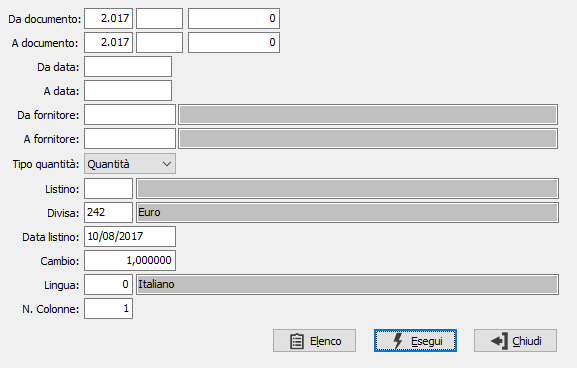
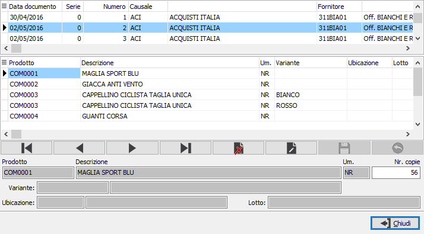

Stampa etichette Ddt
Il programma permette la stampa delle etichette prodotti sulla base dei documenti di carico acquisiti.

DA DOCUMENTO: i tre campi contengono rispettivamente anno, causale e numero del documento da cui si vuole iniziare la selezione. Confermando a vuoto, la selezione inizia dal primo documento compatibile con i successivi parametri.
A DOCUMENTO: i tre campi contengono rispettivamente anno, causale e numero del documento con cui si vuole concludere la selezione. Confermando a vuoto, la selezione termina con l’ultimo documento compatibile con i successivi parametri.
DA DATA: data documento da cui si vuole iniziare la selezione. Confermando a vuoto, la selezione inizia dalla prima data valida.
A DATA: data documento con cui si vuole concludere la selezione. Confermando a vuoto, la selezione inizia dalla prima data valida.
DA FORNITORE: eventuale codice del fornitore, presente in anagrafica fornitori, da cui si vuole iniziare la selezione. Confermando a vuoto, la selezione inizia dal primo fornitore valido. Sul campo sono attive le funzioni di ricerca (F9).
A FORNITORE: eventuale codice del fornitore, presente in anagrafica fornitori, con cui si vuole terminare la selezione. Confermando a vuoto, la selezione termina con l’ultimo fornitore valido. Sul campo sono attive le funzioni di ricerca (F9).
TIPO Quantità: consente di selezionare quale quantità utilizzare per la stampa delle etichette ed indica il numero delle etichette da stampare; può essere utilizzata la quantità principale del documento oppure il numero pezzi. Se si utilizza la quantità è attivo il pulsante Elenco.
DIVISA: eventuale codice divisa per la determinazione del prezzo. Sul campo sono attive le funzioni di ricerca (F9) sulla tabella stessa.
LISTINO: eventuale codice listino per la determinazione del prezzo. Sul campo sono attive le funzioni di ricerca (F9) sulla tabella stessa.
DATA LISTINO: eventuale data di validità del listino utilizzato per la determinazione del prezzo.
CAMBIO: eventuale cambio verso la divisa di gestione, utilizzato per la conversione del prezzo dalla divisa del listino.
LINGUA: eventuale codice lingua per la traduzione delle descrizioni. Sul campo sono attive le funzioni di ricerca (F9) sulla tabella stessa.
N. COLONNE: identifica il n. colonne del modulo di stampa; valori possibili: 1,2,3.
Il pulsante Elenco consente una preselezione della stampa, mostrando nella finestra i documenti con le relative righe di cui saranno stampate le etichette; per ogni rigo è possibile modificare il numero delle copie calcolato in base alla quantità del documento.
